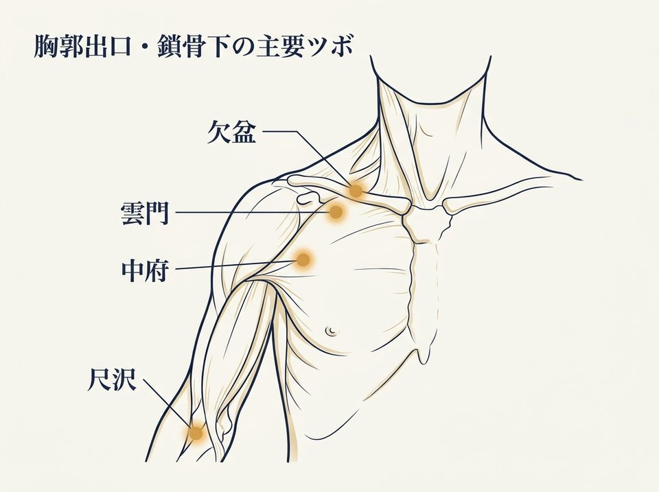

ストレートネックの鍼灸
頸椎の自然なカーブが失われた状態。深層筋の緊張と線維化にアプローチし首肩の不調を整えます。


院長YouTube解説・関連動画
ストレートネックは、首の頸椎部分が真っすぐになった状態
ストレートネックは、首の頸椎部分が真っすぐになった状態のことです。
首の骨は7つあり、正常な首の頸椎はアーチのようにゆるやかなカーブの形をしています。しかし、ストレートネックではアーチがなくなった状態になってしまいます。
ストレートネックになると、身体に色々な不調が起こります。最近は、スマホの普及などによって、ストレートネックの人が急激に増えています。
ストレートネックはさまざまな不調につながる
ストレートネックはさまざまな不調につながります。
そのまま放っておくと、手や腕のしびれ、ヘルニア、首の痛みやこり、頭痛や肩こり、背中の張り、腰の痛みや違和感、めまい、吐き気、耳鳴り、不眠症状などの症状が現れるのです。
他にも、ヘルニアや難聴、耳鳴り、視力の低下た疲れ目、ドライアイ、ふらつき、自律神経失調の乱れや顎関節痛、食い縛りなどの症状に発展する可能性があります。
・首の痛み
ストレートネックになると、首の後ろの筋肉や靭帯に負担がかかり、痛みを引き起こすことがあります。特に、長時間同じ姿勢でいると、首が凝り固まって痛くなることが多いです。首を動かすと、痛みが強くなることもあります。
・肩のこり、痛み
ストレートネックになると、首から肩にかけての筋肉にも負担がかかり、こりや痛みを引き起こすことがあります。肩を動かすと、痛みが強くなることもあります。
・頭痛、めまい
ストレートネックになると、首の筋肉や靭帯が緊張し、血流が悪くなることがあります。そのため、頭痛やめまいを引き起こすことがあります。また、首を動かすとめまいが強くなることもあります。
・視力の低下
首の後ろの筋肉や靭帯に負担がかかることで、目の周りの筋肉にも影響が出ることがあります。そのため、視力の低下を引き起こすことがあります。また、目が疲れやすくなることもあります。
・手のしびれ、痛み
ストレートネックになると、首から肩にかけての神経に圧迫がかかり、手のしびれや痛みを引き起こすことがあります。手の感覚が鈍くなることもあります。
・疲れやすさ、ストレス
ストレートネックになると、首の筋肉や靭帯が緊張し、身体の疲れやストレスを引き起こすことがあります。また、眠りが浅くなることもあります。
以上が、ストレートネックの主な症状です。これらの症状がある場合は、ストレートネックの可能性があるため、早めに医師や専門家に相談することが大切です。
自分でできることは、正しい姿勢を心がけること
ストレートネックの改善方法として自分でできることは、正しい姿勢を心がけること、パソコンやスマホを長い時間使わないように心がけること、首や肩の周りの筋肉を緩めることなどです。
スマホを使う時は、目の高さに合わせて使うように意識をすることも非常に大事です。
他にも、顎押し体操という体操も効果的です。顎押し体操は、顎に手をあてて水平に後ろへ押す体操です。
首や背中の筋肉を強化することで、正常な首の後弯を回復させることができます。例えば、首のストレッチや背中のエクササイズを行うことで、筋肉を柔らかくし、強化することができます。ストレッチは、朝晩の正しい姿勢での10分間程度、背中のエクササイズは週に2〜3回程度を目安に行うことが推奨されます。
ストレートネックが進行している場合は、矯正が必要な場合があります。矯正は、整形外科、整体、カイロプラクティックなどの専門家によって行われます。手技やマッサージ、電気、トラクションなどを組み合わせて行われます。しかし、矯正は、専門家によって行われることが推奨されます。
・日常生活の改善
ストレートネックを改善するためには、日常生活の改善が大切です。例えば、長時間同じ姿勢を続けないこと、携帯電話やパソコンを使うときに首を無理に曲げないこと、枕の高さを適切な高さに調整することなどが大切です。また、運動不足がストレートネックを引き起こす場合があるため、適度な運動を行うことが重要です。
・睡眠の改善
ストレートネックの改善には、睡眠の改善も重要です。枕の高さや硬さが適切であること、寝る前にストレッチを行うことなどが効果的です。また、横向きで寝ることも、ストレートネック改善に有効です。
・マッサージ
首や肩、背中の筋肉をマッサージすることで、血流を良くし、筋肉の緊張を緩和することができます。また、マッサージによって筋肉を柔らかくすることで、正常な首の後弯を回復させることができます。専門家による施術が効果的ですが、自分でできる軽いマッサージでも十分効果があります。
・エルゴノミクス
ストレートネックを引き起こす原因の一つに、デバイスの使用や長時間の座り仕事があります。そこで、エルゴノミクスに配慮したデバイスや家具を使用することがストレートネック改善につながります。例えば、目線とスクリーンの高さを合わせたり、背もたれがある椅子を使用するなど、姿勢を正常な状態に戻す工夫が大切です。
痛みや炎症がある場合には、医師から処方された鎮痛剤や非ステロイド性抗炎症薬などの薬が有効です。ただし、薬は症状を抑えるための一時的な対処に過ぎず、ストレートネック自体を改善することはできません。
ストレートネックのセルフケア
①のストレッチ
②のストレッチ
ストレートネックは、頸椎の生理的な湾曲が失われることで起こる症状です。デスクワーク、長時間のゲーム、スマホの使用によって首や肩、腕の痛みが出てしまいます。ここでは、ストレートネックを改善するストレッチを2つお勧めします。
①両手を肩に乗せて肩を窄めて左右にのばしましょう。
お腹の腹斜筋と肩甲挙筋はつながっているためここの筋肉にアプローチすることで首が楽になります。
②手をバツにして足を挟んで足を開きましょう。
肩甲骨の間が伸びて気持ちが良いと思います。このストレッチは菱形筋が伸びるため非常に効果的です。
ぜひ1日100回行いましょう。
PCやスマホのやりすぎでストレートネックになっている人は多いです。ストレートネックの人は必ずこの２点が凝っています。
①大円筋、小円筋
手を後頭部にくっつけて反対側の手で肩甲骨の外側をぐりぐり押しましょう。ストレートネックやスマホ首で悩んでいる人はここがすごく凝っています。
②肩甲挙筋
首の真横にある筋肉です。親指で首の真横をグーっと押しましょう。下から上に向かって押していきます。この時に良いポイントに当たると肩甲骨まで響きます。ストレートネックの人は首と肩甲骨の位置が非常に悪いです。そのため、肩甲骨を内に寄せて首と肩甲骨を繋いでいる筋肉を解さないといけません。すると楽になるはずです。
体の歪みについて
「体の歪みをとって行きましょう」「体が歪んでいる」とよく聞きますが、体の歪みについて当院では年間9000人の施術をしている中で分かったことがあります。
体の歪みとは、骨格や筋肉、関節が正常な位置からずれている状態を指します。そのことによって姿勢の悪化、痛み、機能障害が生じることがあるのです。
肩の高さが異なっている、骨盤が歪んでいる、背骨が湾曲しているなどのケースが典型的で、猫背、足の長さが違う、足が開いているなどという状態が体の歪みです。不均衡が連鎖的に他の部分にも負担をかけて問題がどんどん広がっていきます。
体の歪みによって症状が発生するという理論です。
体の歪みの原因はいろいろあります。
1.姿勢の悪さ
長時間の前屈みな姿勢、デスクワーク、日常のルーティンワークによって起きる。
2.筋力のバランス
特定の筋肉が過度に発達して他の筋力が弱い場合に起きる。
3.日常生活の習慣
片方の肩にバッグをかける、片足に体重をかけて立つ習慣などによって起きる。
4.運動不足
運動不足で筋肉が低下し、体を支える力が弱くなることで起きる。
5.怪我や病気
過去の怪我や病気が原因で体の一部が正常に機能しないことで起きる。
体の歪みには歴史的な背景もあります。体の歪みは古代から存在しているもので、文化や時代によってアプローチ方法が違うのです。
古代エジプトやギリシャでは骨格の歪みが健康に与える影響を認識されており、対策までしていました。経路を通じたエネルギーを流れを重視する考え方で、経絡に歪み、エネルギーが通っていないと体が歪んでいるという概念になります。
現代医学では、１９世紀後半から２０世紀初頭にかけて整形外科やカイロプラクティックが確立し科学的なアプローチでの改善法は確立されています。骨格は左右対称がベストであるとして左右対称に持っていきます。
1.姿勢の改善
正しい姿勢を保つこと
2.ストレッチやエクササイズ
筋力のバランスを整えるために運動を行う
3.理学療法
理学療法士の手技、運動療法
4.整体カイロプラティック
骨格の専門医の手技療法で調整する
5.生活習慣の見直し
日常生活の悪い習慣を改める
歪みに関して1番大事なことは、早期介入です。
体の歪みは今の生活パターンを効率よく楽に動かせるための仕様になっていくため、だんだんと体に馴染んでいきます。
早くアプローチしないと体の歪みが普通になるのです。症状が固定化されていくため早期介入が大事です。
クリスパー・キャスナインという最新技術があります。遺伝子の編集技術が遺伝的な要因による体の歪みの改善にどのように役立つかが今検討されているのです。将来的に遺伝子変異を修正することによって歪みの予防、改善に革命をもたらす可能性があります。
体の歪みは遺伝子の変異から起きているため遺伝子を改善することにとって歪みを改善しようという考え方です。
これは、側弯症によいです。脊柱の側弯は曲がってしまうと元に戻らないため大規模な手術をして改善を行っている人が多いがそれに伴う負の側面もあるため、遺伝子から改善できれば素晴らしいと思います。
🎥 他のYouTube切り抜き・解説を読む（あと2件）▼
鍼灸業界においての体の歪み
体の歪みというのは施術者のポジショントークです。
整体師からすると、「右肩が下がっている」「左肩が上がっている」というように左右対称がベストだという考え方です。
マッサージ師からすると、「体が歪んでいる」「凝っている」というように筋肉の盛り上がりや硬さを指標にする考え方です。
鍼灸師に関しては、そういうアプローチを受けて改善しなかった人をよくみます。院長も最初は体の歪みはなんなのか非常に悩まされました。施術者自身が何を信じているかによってアドバイスがどんどん変わっていくと感じている時、改善しない人を見ると、骨格の左右対称や筋肉の硬さは全く症状に関係ないことがわかりました。
40代以上の女性の方のご主人様は筋肉は硬くても肩は凝っていないと言われることが多いと思います。このように、体の歪みは症状に全く関係なく、歪んでいても全然大丈夫です。
仕事や考え方によって美しいボディラインを保ちたいのであれば体の歪みを意識する必要がありますが、耳鳴りや肩こり、腰痛は全く体の歪みには関係ありません。この証拠として、改善を行っている先生は歪んでいます。
整体などで体をぼきぼきすることによって若干体の調子が悪くなることもあります。これは好転反応ではなく、体の歪みは今の状態を最適化されているもののため、強制的に変えられると脳が変な刺激が入ったと思い症状がどんどん出てくるためです。
脳がどういう状態でいるかが１番大事で、体はそんなに重要ではありません。歪んでいても筋肉が硬くても症状がなければ楽しい人生を送れます。体の歪みに騙されず、極端なストレッチやマッサージは控えて健康な体にしていただきたいです。
院長の祖父は９０度腰が曲がっていましたが、腰痛や肩こりは感じないと言っていました。その時自分が勉強しているものと、祖父の状態が全く一致していなかったのです。体の歪みが悪というのが真理ではないということです。
当院では、脳がどれだけ健康な状態でいるのかということが1番大事であると感じ、不安要素やストレスな環境を排除することによって脳は正常化していくと考えています。
眠れない痛みで悩んでいるYさんの場合
首から肩にかけての痛み。夜痛くて起きたり日中も重い感じがあったりしてそれがずっと続いている。他に気になる症状は巻き肩とストレートネック。仕事はパソコンの作業が多いため前屈みになっている。
・症状が起こった時期
気付いたのは5年くらい前で、肩こりはもともとあったがここまで酷くなったのはどんどん重なったからだと思う。腕がだるくなったり時々耳鳴りがある。
・病院などの経験
マッサージや整体には行ったことがあり硬いと言われる。もみ返しになることが多く受けられないことが多い。鍼は1度行きましたが、そこでは気持ちいいかなという感じだったがそれ以降劇的に変わったことはない。
基本的に体の構造は悪くなく、関節の構造も悪くないですが問題は緊張する時間が長いことです。石灰沈着性腱板板ともいい、ダメージや炎症が続くと組織が固くなりコラーゲン増加による繊維化が起こることがあります。それができるとしんどい慢性痛が出てしまいます。そのため繊維化した組織を切り刻むというのが当院の考え方です。
年配の方は筋繊維を輪切りにすると白い繊維がいくつか出てきます。年配の方は筋肉も痩せて支える力が弱くなってくると細い筋肉で支えようとしてそこが繊維化しやすくなり、筋肉構造から痛みが出ます。
若い人でもそういうことが起こります。繊維化している部分を切り刻まない限りはずっと湿布や鎮痛薬が手放せない状態になってしまうのです。それをわざと鍼で傷つけて再生し、触って硬い、巻き方、ストレートネックといっても症状は全くない体にすることを目指しています。
肩こりは特殊で肩が凝っても全然症状がない人もいます。巻き肩やストレートネックは全く関係なく、問題は脳の感受性と筋肉の質です。脳の感受性を上げる要素として女性に多いのが女性ホルモンのため、当院ではそこから全部施術を行っています。首や肩の強いストレッチやマッサージは控え、カフェインや激辛も控えてください。
▼ 詳しく知りたい項目だけタップして開けます（全項目の医学解説を収録）
01. 原因とメカニズム
なぜ症状が起きるのか・鍼灸の作用機序を読む
▼
01. 原因とメカニズム
なぜ症状が起きるのか・鍼灸の作用機序を読む
本来ゆるやかなカーブを描く頸椎（7つの骨）が真っすぐになった状態です。スマホやPCの長時間使用によるうつむき姿勢（スマホ首）をはじめ、猫背や反り腰、高すぎる枕、頸椎の変性、筋肉の不調和、交通事故やスポーツなどの外傷が主な原因となります。緊張の持続により筋線維の線維化が進み、不調が長引きやすくなります。
なぜ鍼灸で改善へ向かうのか？（作用機序の図解）
ストレートネックに対する鍼灸は、トリガーポイント解放と疼痛抑制系の作用機序を通じて、お体本来の回復力を引き出します。
手技では届きにくい深層筋の硬結（トリガーポイント）へ繊細な鍼で直接刺激を届けます。
CGRPや一酸化窒素の放出により微小血管が拡張し、滞っていた発痛物質の洗い流しを促します。
脊髄後角で痛み信号を遮断し、脳幹からの内因性鎮痛物質（エンドルフィン等）の働きを高めます。
防御性の筋スパズムが解け、関節可動域と本来の動きやすさが段階的に回復します。
02. よくあるお悩み
このような症状はありませんか？（4項目）
▼
02. よくあるお悩み
このような症状はありませんか？（4項目）
- ✓首の痛みやこり、肩こり・背中の張りが続いている
- ✓頭痛やめまい、眼精疲労・ドライアイが気になる
- ✓腕や手にしびれが出ることがある
- ✓耳鳴りや不眠、顎関節の違和感・疲労感がある
03. 当院の施術アプローチ
施術の進め方・改善のポイントを見る
▼
03. 当院の施術アプローチ
施術の進め方・改善のポイントを見る
04. ツボ詳細・セルフケア一覧
首・肩・上腕のツボ図解とセルフケア（6穴）
▼
04. ツボ詳細・セルフケア一覧
首・肩・上腕のツボ図解とセルフケア（6穴）
実際の施術ではお一人おひとりの体質・症状に合わせて選穴しますが、首・肩・上腕（肩関節・頸椎・肩甲帯）の筋骨格系トラブルの臨床でよく用いられる代表的なツボの目安です。
| ツボ名 | 位置の目安 | 主な狙い | セルフケアの注意点 |
|---|---|---|---|
| 肩髃（けんぐう） | 腕を横に挙げたときに肩の前の角にできるくぼみ | 上腕二頭筋長頭腱炎・五十肩・肩関節周囲の痛みと可動域改善 | 炎症や夜間痛が強い時期は強く揉み込まず、温めや軽い圧迫に留めます。 |
| 臂臑（ひじゅ） | 肩の三角筋の先端（腕の外側の境目のくぼみ） | 上腕の重だるさ・腕を上げる際の引っかかり感・肩関節の負担軽減 | 骨に向かって垂直に3〜5秒じんわり押す程度が安全です。 |
| 天宗（てんそう） | 肩甲骨のほぼ中央、押すと響くくぼみ | 肩甲骨周囲の深層筋（棘下筋）の緊張緩和・腕への放散痛ケア | テニスボール等で強く押しすぎず、心地よい響きで止めます。 |
| 肩井（けんせい） | 首の付け根と肩先を結んだ線の中央 | 僧帽筋の過緊張緩和・首肩のこりや張り改善 | 妊娠中の方は強い刺激を避け、優しく温める程度にしてください。 |
| 風池（ふうち） | 後頭部の生え際、耳の後ろの骨と首筋の間のくぼみ | 頸椎周囲の深層筋緊張・首こり・肩腕への神経負担緩和 | 親指で頭の中心に向かって優しく支えるように押します。 |
| 曲池（きょくち） | 肘を曲げたときにできる外側のシワの先端 | 上腕〜前腕の筋膜連動の調整・肩肘の炎症・だるさ軽減 | 反対側の親指でゆっくり5秒押して離すリズムで行います。 |
05. 医学的根拠・国際査読論文（PubMed / Cochrane）
科学的エビデンス・出典リンク一覧（4件）
▼
05. 医学的根拠・国際査読論文（PubMed / Cochrane）
科学的エビデンス・出典リンク一覧（4件）
国際的な医学データベース（PubMed・Cochrane等）で報告されている首・肩・上腕（肩関節・頸椎・肩甲帯）の筋骨格系トラブル領域の代表的な査読済み鍼灸研究をまとめています（標準治療との併用や研究上の限界を含めて正確に掲載）。
| 年・研究デザイン | 対象・規模 | 主な結果 | 限界・出典 |
|---|---|---|---|
| 2018年 IPDメタ解析 | 慢性筋骨格痛・頭痛 39 RCTs（n=20,827） | 全領域でシャム鍼・無治療比とも有意優位（P<0.001）、1年後も効果低下約15%で持続。 | 対照設定により効果量変動。 J Pain (PMID: 29198932) |
| 2020年 Cochraneレビュー | 慢性非特異的腰痛 33 RCTs（n=8,270） | 無治療比で直後疼痛（MD -20.32）と機能（SMD -0.53）が臨床的に有意改善。有害事象は軽微。 | 施術者盲検化不可・確実性は中等度〜非常に低。 Cochrane (PMID: 33306198) |
| 2024年 多施設RCT | 慢性坐骨神経痛 216名（6病院・52週追跡） | 4週時点の下肢痛VAS減少30.8mm vs 14.9mm（差-16.0mm, P<0.001）、52週後も持続。 | 中国3次病院限定・施術者盲検化不可。 JAMA Intern Med (PMID: 39401008) |
| 2016年 メタ解析 | 変形性膝関節症 10 RCTs | 短期（13週）で疼痛（WMD -1.24, p<0.001）と機能（p<0.001）が有意改善、26週も機能維持（p=0.016）。 | 試験間の異質性が高く運動療法併用が推奨。 JBJS Am (PMID: 27655986) |
参考文献・出典
- 2018年 IPDメタ解析（慢性筋骨格痛・頭痛 39 RCTs（n=20,827））— J Pain (PMID: 29198932)
- 2020年 Cochraneレビュー（慢性非特異的腰痛 33 RCTs（n=8,270））— Cochrane (PMID: 33306198)
- 2024年 多施設RCT（慢性坐骨神経痛 216名（6病院・52週追跡））— JAMA Intern Med (PMID: 39401008)
- 2016年 メタ解析（変形性膝関節症 10 RCTs）— JBJS Am (PMID: 27655986)
06. よくある質問（FAQ）
よくあるご質問を見る（2件）
▼
06. よくある質問（FAQ）
よくあるご質問を見る（2件）
Q. ストレートネックに強いストレッチやマッサージは効果的ですか？
過度に緊張した筋肉へ強い刺激を加えると悪化する場合があるため、当院では強いストレッチやマッサージは控えるようお伝えしています。
Q. 日常生活で気をつけることはありますか？
スマホやPC使用時の前傾姿勢を見直し、高すぎる枕を避けるほか、カフェインや激辛食品を控えることも意識してみてください。
あわせて読まれる関連疾患（筋肉、骨のお悩み）
お尻から足後ろ側へ広がる痛みやしびれ。原因を見極め、腰・臀部・股関節の深層筋へ的確にアプローチします。
40〜60代に多い肩の激痛・可動域制限（五十肩）を、炎症期と拘縮期の見極めと鍼灸・全身バランス調整で改善する解説。
HTLV-1ウイルス感染者の一部に発症し、脊髄の炎症により両下肢のつっぱり・歩行障害や排尿障害が徐々に進む疾患です。
成長期の中高生がスポーツ中の急激な筋収縮により、骨盤の骨端線付着部で骨の一部が剥がれて起こる骨折です。
免疫系が自身の筋組織を攻撃して炎症と変性を起こし、対称性の筋力低下や筋痛をきたす全身性のリウマチ性疾患群です。
骨端軟骨とその周囲の軟部組織にX線上の点状石灰化像がみられ、低身長や関節・脊柱の異常を伴う遺伝性疾患群の総称です。
CLINICAL RECOVERY CASES
✨ 実際の臨床改善事例・回復経過を見る
銀座本院をはじめ各院での実際の改善事例を症状別に絞り込んでご確認いただけます。
おひとりで悩まず、まずはご相談ください
銀座本院・川口・大宮・横浜・博多・田無の各院でご予約を承っております。